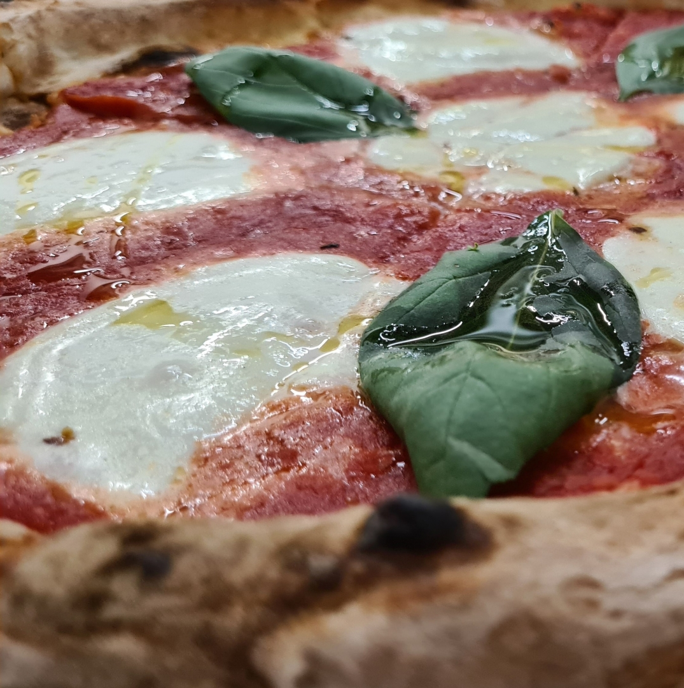
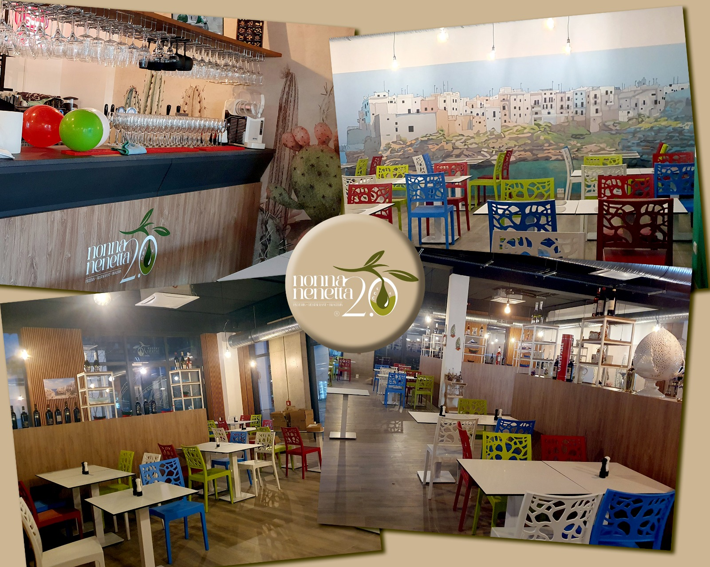
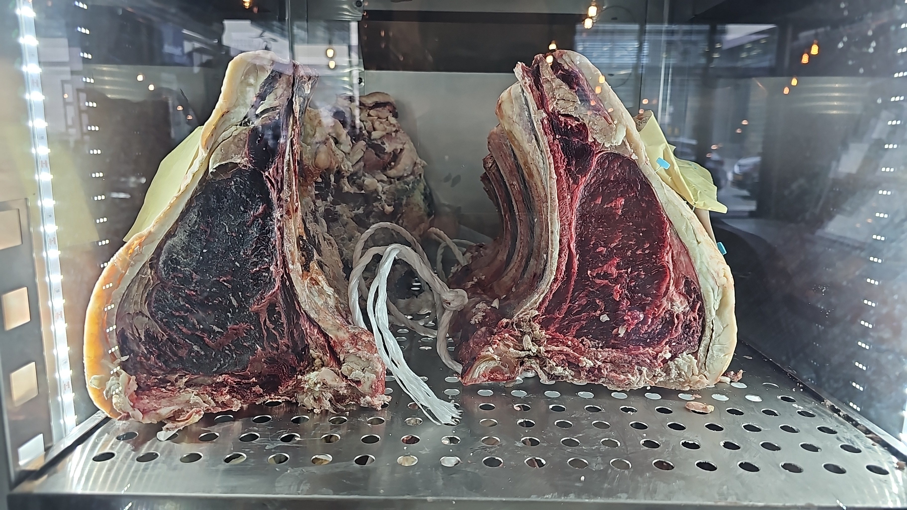
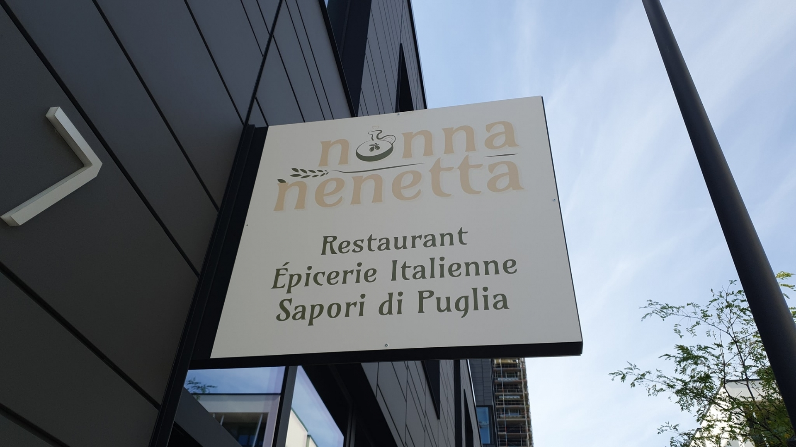
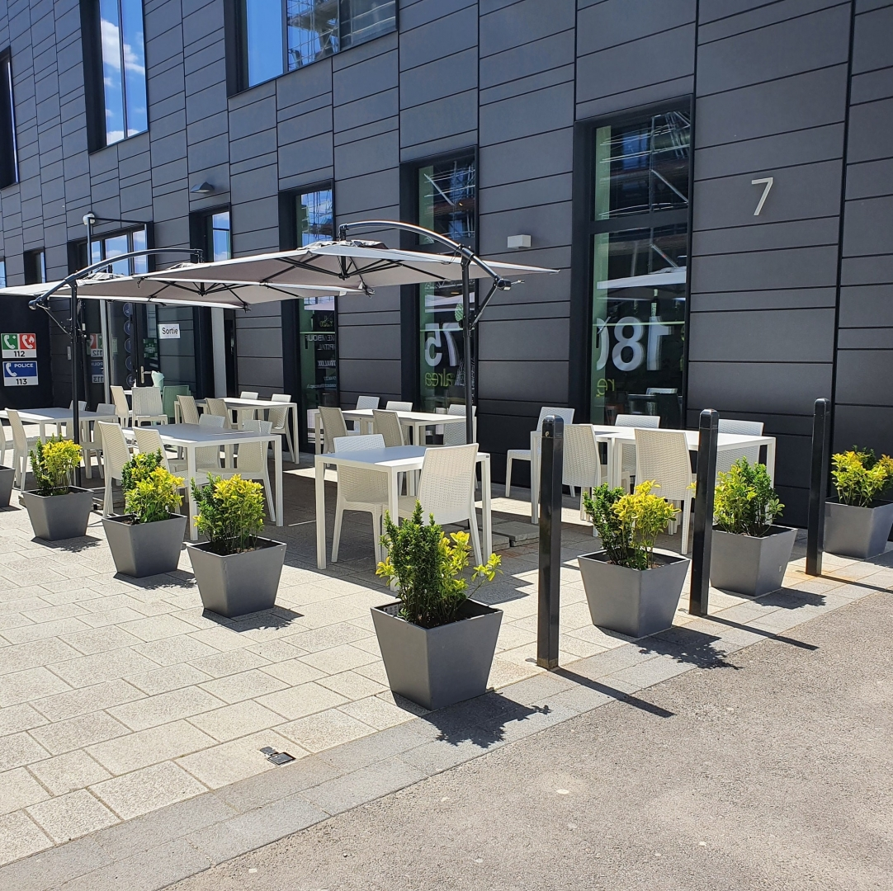
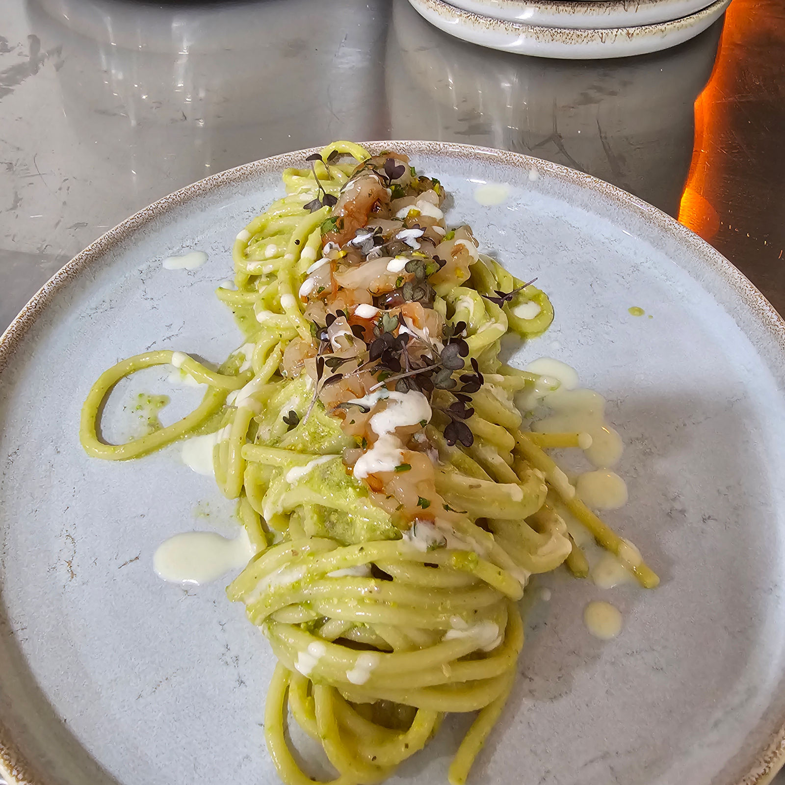
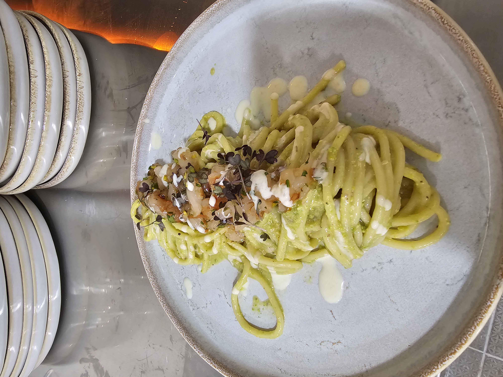
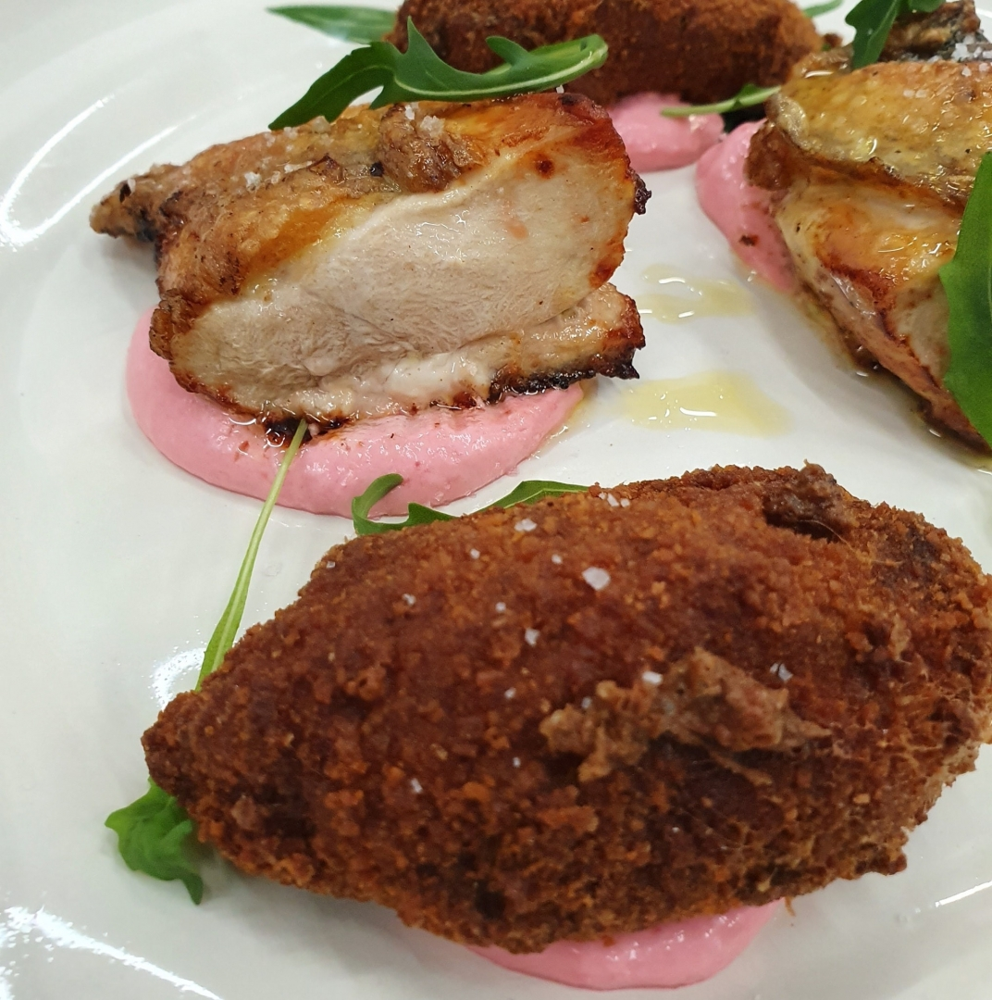
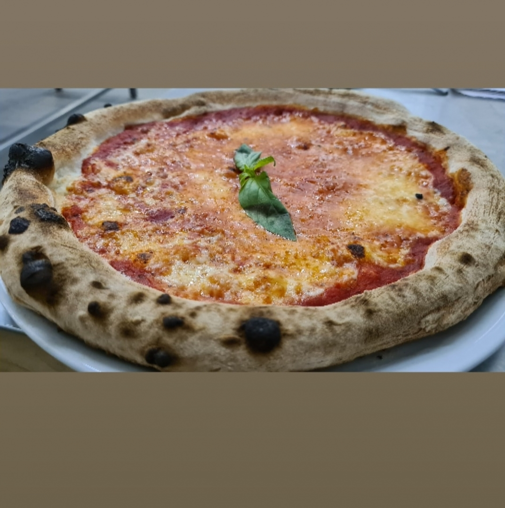

nonna
nenetta 2.0
Les vraies saveurs des Pouilles, à Belval. (slogan proposé)

Margherita au feu de bois · cornicione napolitain
La salle & sa fresque de Polignano a Mared'oliva

Braceria · viandes maturées Irish Prime
La cuisine de Nonna Nenetta
Une grand-mère, toute la Puglia dans l'assiette
Nonna Nenetta, c'est d'abord une grand-mère — celle qui a transmis à la famille l'amour de bien cuisiner. Aujourd'hui, ses petits-enfants, originaires des Pouilles, font vivre sa cuisine à Belval : tout est préparé sur place, selon les recettes de toujours, avec des produits frais et de qualité.
Pizza napolitaine au feu de bois, pâtes maison, braceria de viandes maturées, puccia pugliese et une épicerie italienne : le Sud de l'Italie, servi avec générosité dans une salle vive et accueillante.

La terrasse · Avenue du Swing, Belval
Spaghetto · tartare de gambas & burrata
Spaghetti crème de pistache & gambasLa Carte

L'assiette braceria · dressée minute
Cuite en 90 secondes au feu de boisLes Services
Nous trouver
Horaires
| Lun – Jeu | 11:30–14:30 · 18:30–22:00 |
| Ven – Sam | 11:30–14:30 · 18:30–22:30 |
| Dimanche | Fermé |
Horaires à confirmer avec l'établissement.
Adresse
7, Avenue du Swing
L-4367 Belval — Sanem
(Belval · Esch-sur-Alzette)
N° de rue à confirmer (7 / 3 Avenue du Swing).
Réserver & contact
Téléphone
+352 26 17 53 62
Email
enzo599@msn.com
Coordonnées à confirmer avec l'établissement.